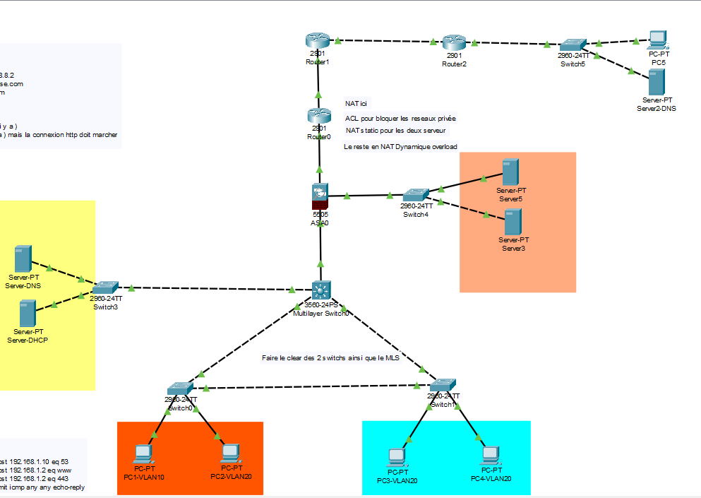

← Retour au portfolio
Étude de Cas : Architecture Réseau PME
Conception et sécurisation complètes du réseau d’une PME sur Cisco Packet Tracer.

1Le Défi
L'objectif était de bâtir de A à Z l'infrastructure réseau simulée d'une PME en suivant un cahier des charges strict. Le projet exigeait non seulement la mise en place des services essentiels (DHCP, DNS), mais aussi une forte dimension de sécurité pour protéger les actifs internes tout en exposant un service web sur Internet.
2La Solution Technique
- Segmentation (VLANs) : J'ai créé plusieurs VLANs pour isoler les flux de données entre les départements (direction, technique, etc.), améliorant ainsi la sécurité et la performance.
- Sécurité Périmétrique (Cisco ASA) : J'ai déployé un pare-feu avec des règles de filtrage précises (ACLs) pour contrôler strictement le trafic entre Internet, le réseau interne et la DMZ.
- Zone Démilitarisée (DMZ) : J'ai mis en place une zone réseau isolée pour héberger le serveur web, le protégeant des menaces directes tout en le rendant accessible de l'extérieur.
- Translation d'Adresses (NAT) : J'ai configuré le NAT statique pour le serveur web et le NAT dynamique (PAT) pour permettre aux employés de naviguer sur Internet de manière sécurisée.
3Les Résultats & Apprentissages
Le résultat est une infrastructure réseau simulée, entièrement fonctionnelle, sécurisée et documentée, qui démontre une maîtrise complète des concepts fondamentaux de l'administration réseau et de la cybersécurité. Ce projet m'a permis de mettre en pratique la théorie et de comprendre les enjeux d'une conception réseau réfléchie.